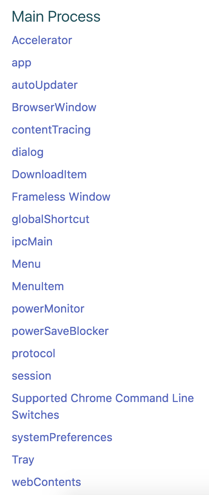
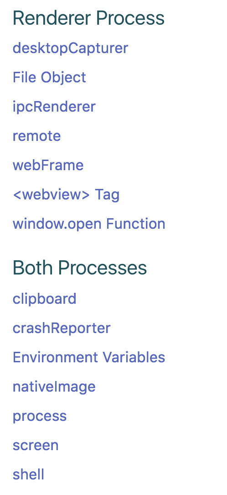

Aaron Ackerman
twitter.com/_aaronackerman_
github.com/aackerman
What is Electron?
- An interface to native APIs
- A collection of open source technologies
- An ecosystem of tools
Competing projects
- NW.js (previously known as node-webkit)
- CEF (Chromium Embedded Framework)
- Adobe AIR
- Qt
- Java
Supported platforms
- OSX (>= 10.9)
- Windows (Windows 7 / Server 2008 R2 or higher)
- Linux (Ubuntu 12.04+, Fedora 21+, Debian 8+)
Built with Electron
- Atom editor - Github
- VS Code - Microsoft
- Nuclide - Facebook
- Kitematic - Docker
- Slack desktop - Slack
- Basecamp desktop - Basecamp
- Wordpress desktop - Wordpress
- Many others...
Challenges
- Missing APIs
- Cross-platform testing
- Platform specific bugs
- Security Concerns
What's great
- Documentation
- Support
- Versioning and Deprecations
- One runtime

Main process vs Renderer process capabilities


The Ecosystem of Electron Tools
electron-quickstart
electron-api-demos
electron-packager
electron-rebuild
electron-prebuilt
Devtron

Spectron

All Node.js modules
Questions?
Aaron Ackerman
twitter.com/_aaronackerman_
github.com/aackerman